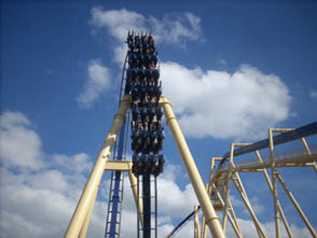
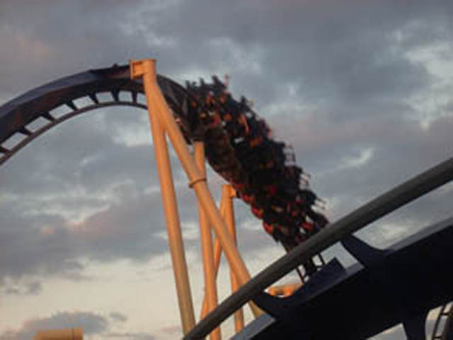
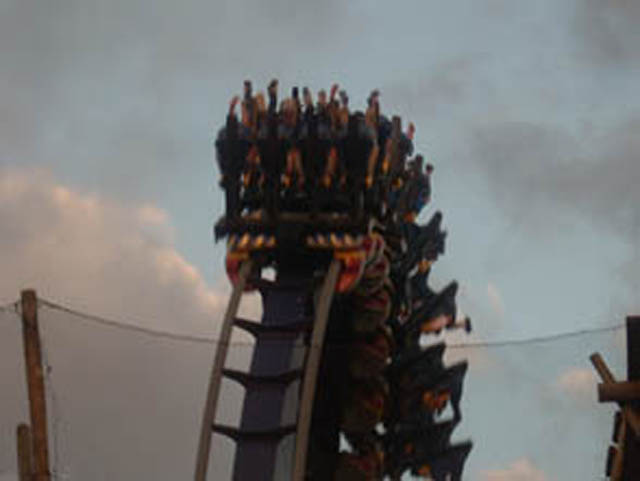
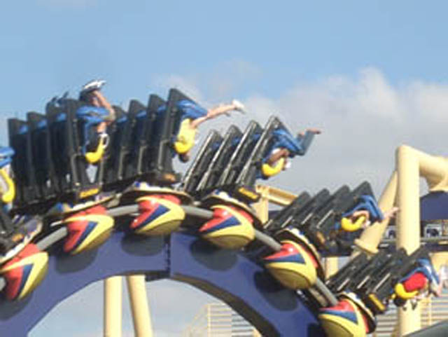

| |
Montu Review

We're here at Busch Gardens Tampa to ride Montu. After pulling down the shoulder harness, the floor drops and away we go. We head into a small dip out of the station. While today, you'll just see rocks down below you. But a long long time ago, there were crocodiles in that pit below. Unfortunetly, Busch Gardens had to take them away since the poor crocodiles were getting screamed at and insulted by all the guests who wanted to take their anger out on the opposing Gwazi side, but couldn't due to the seperate lifthills and unleashed their anger out on the crocodiles instead. Now that there are no more crocodiles to take your anger out on. And no more Gwazi to be upset about not being able to coaster race on either. =P So you'll just have to take all your anger out on Facebook. Though be careful as some people consider angry Facebook rants to be a form of cyberbullying. Anyways, we then go and climb up the long lifthill. We get a nice view of the street of Tampa Bay while climbing up the lifthill. Though once we reach the top of the lifthill, we realize we don't want to float above the streets of Tampa Bay, and twist down and dive into the first drop. By the time we reach the bottom of the first drop, we've got a sh*tload of speed on us. Now we gotta do a bunch of stuff to burn it all off. The first thing we do is fly straight up into a vertical loop. Suprisingly, we are still going pretty strong at the top of the loop. We then soar back down towards the ground before heading right into an underground tunnel. For a second, everything goes black. But before we can shout "Am I dead?", you fly straight out of the tunnel and into the Immelmann loop. We soar up into the sky as if it were a vertical loop, but then we twist and drop back down to the ground. We then rise up into the Heartline Spin. And let me tell you this. On Montu, it is POWERFUL!!! You go upsidedown and then not upsidedown just like that. It's seriously one of the best heartline spins that B&M has made. But suprisingly, that's not the best part of Montu. It's pretty damn close though. We then soar straight into what is the best part of the ride. The Batwing. Unfortunetly, right before we go into the batwing, we deal with a pretty nasty trim brake. We then twist upsidedown only to dive back down into a trench. We pull some pretty good Gs here. And then we fly back up into what seems like a tiny loop, but then twist out of it. The great thing about Montu's Batwing is that it ROARS through the batwing unlike Viper. Man, if only I could've ridden it without the trims. Now THAT would have been f*cking insane. We then rise up into the midcourse brakes. Unfortunetly, this midcourse brake run is actually pretty powerful and takes away most of the ride's speed. But then, we go right into a nice swooping drop down into the trenches where we get alot of speed back. Then, it's dejavu all over again as we head straight into yet another vertical loop. And like our first vertical loop, this one is also pretty powerful. We then roar up into an upward helix right along the grass and over the trenches. The helix is OK, but there are much better helixes out there. We then dip down and go straight into a banked turn. While the banked turn isn't intense or crazy or anything like that, it's still fun. We then dip back down into the trenches to be whipped out via corkscrew. The corkscrew is fun, but I definetly felt it could've been better had those midcourse brakes been more forgiving. We then grind through the final helix out of the trenches and into the brake run. Montu is a fantastic B&M Invert and a fantastic addition to Busch Gardens Tampa. It's big, fast, intense, and powerful. I would totally recommend riding it if you are at Busch Gardens Tampa.
9/10
Location: Busch Gardens Tampa
Opened: 1996
Built by: B&M
Last Ridden: November 19, 2007
Montu Photos






Home
|